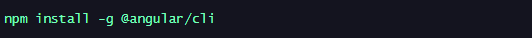
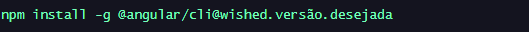
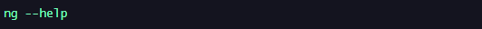
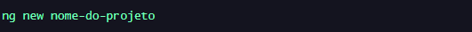
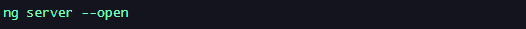

Menu
O que é AngularJS | Versões | Instalando | Conferindo instalação | Criando Projeto Execultando Projeto |O que é AngularJS?

AngularJS é um framework JavaScript desenvolvido pelo Google que facilita a criação de aplicativos web dinâmicos ao oferecer recursos como data binding bidirecional, modularidade e gerenciamento de estado, permitindo que os desenvolvedores construam interfaces interativas de forma mais eficiente.
Últimas versões AngularJS
1.8.2/
1.8.1/
1.8.0/
1.7.9/
1.7.8/
1.7.7/
1.7.6/
1.7.5/
1.7.4/
Instalando Angular CLI
Antes de Instalar o Angular CLI, é necessario que se tenha instalado o Node.js, já que o angular é instalado via Node.
Então para instalar a versão mais recente do Angular CLI usa se o comando:
Então para instalar uma versão expecifica do Angular CLI usa se o comando:
Então verificar se o Angular CLI foi corretamente instalado usa se o comando:
Se aparecer uma lista com os comandos diponiveis que dizer que deu certo.
Para Criar um Projeto com Angular usa se O comando
Durante acriação sera questionado o tipo de CSS a ser utilizado é so digitar
Para executar um Projeto com Angular usa se o comando
 Voltar